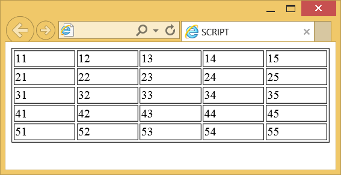

Элемент <script>
| Internet Explorer | Chrome | Opera | Safari | Firefox |
| 3 | 1 | 3.5 | 1 | 1 |
| Android | Firefox Mobile | Opera Mobile | Safari Mobile |
| 1 | 1 | 6 | 1 |
Элемент <script> предназначен для описания скриптов, может содержать ссылку на программу или её текст на определённом языке. Скрипты могут располагаться во внешнем файле и связываться с любым HTML-документом. Такой подход позволяет использовать одни и те же общие функции на многих веб-страницах и ускоряет их загрузку, т. к. внешний файл кэшируется при первой загрузке, и скрипт вызывается быстрее при последующих вызовах.
<script> может располагаться в заголовке или теле HTML-документа в неограниченном количестве. В большинстве случаев местоположение скрипта никак не сказывается на работу программы. Однако скрипты, которые должны выполняться в первую очередь, обычно помещают в заголовок документа.
Синтаксис
<script>
...
</script>
<script type="тип" src="URL"></script>Закрывающий тег
Аттрибуты
- async
- Загружает скрипт асинхронно.
- defer
- Откладывает выполнение скрипта до тех пор, пока вся страница не будет загружена полностью.
- language
- Устанавливает язык программирования на котором написан скрипт.
- src
- Адрес скрипта из внешнего файла для импорта в текущий документ.
- type
- Определяет тип содержимого <script>.
Пример
<!DOCTYPE HTML PUBLIC "-//W3C//DTD HTML 4.01//EN"
"http://www.w3.org/TR/html4/strict.dtd">
<html>
<head>
<meta http-equiv="Content-Type" content="text/html; charset=utf-8">
<title>SCRIPT</title>
</head>
<body>
<script type="text/javascript">
document.write ('<table width="100%" border="1">');
for (i=1; i<6; i++) {
document.writeln("<tr>");
for (j=1; j<6; j++) document.write("<td>" + i + j + "<\/td>");
document.writeln("<\/tr>");
}
document.write ("<\/table> ");
</script>
</body>
</html>Результат данного примера показан на рис. 1.

Рис. 1. Результат работы скрипта
В данном примере с помощью скрипта выводится таблица, состоящая из пяти строк и столбцов, которая заполняется числами.
<!DOCTYPE html>
<html>
<head>
<meta charset="utf-8">
<title>SCRIPT</title>
<script>
function popup() {
document.getElementById('welcome').innerHTML = 'Добро пожаловать!';
}
</script>
</head>
<body onload="popup()">
<div id="welcome"></div>
</body>
</html>В данном примере внутри элемента с идентификатором welcome выводится текст сообщения.
Примечание
В HTML5 атрибут type можно опустить, он является необязательным и принимает значение text/javascript, если не указан явно. В предыдущих версиях HTML атрибут type необходим.
Спецификация ?
| Спецификация | Статус |
|---|---|
| HTML5 | Рекомендация |
| HTML 4.01 Specification | Рекомендация |
Спецификация
Каждая спецификация проходит несколько стадий одобрения.
- Recommendation (Рекомендация) — спецификация одобрена W3C и рекомендована как стандарт.
- Candidate Recommendation (Возможная рекомендация) — группа, отвечающая за стандарт, удовлетворена, как он соответствует своим целям, но требуется помощь сообщества разработчиков по реализации стандарта.
- Proposed Recommendation (Предлагаемая рекомендация) — на этом этапе документ представлен на рассмотрение Консультативного совета W3C для окончательного утверждения.
- Working Draft (Рабочий проект) — более зрелая версия черновика после обсуждения и внесения поправок для рассмотрения сообществом.
- Editorʼs draft (Редакторский черновик) — черновая версия стандарта после внесения правок редакторами проекта.
- Draft (Черновик спецификации) — первая черновая версия стандарта.
Особняком стоит живой стандарт HTML (Living) — он не придерживается традиционной нумерации версий, поскольку находится в постоянной разработке и обновляется регулярно.